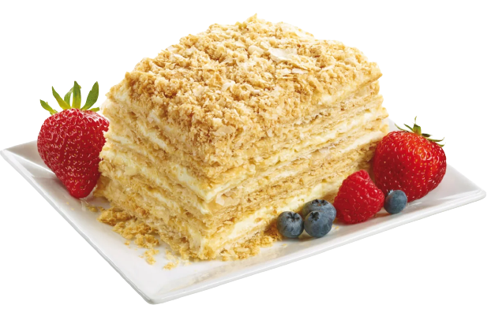

- Яйцо куриное — 3 шт
- Масло сливочное — 320 г
- Мука — 550 г
- Вода — 200 мл
- Соль — 5г
- Сахар — 200г
- Молоко — 500 мл
- Ванильный сахар — 1 пакет
- Сливки (38%) — 150 мл
Яйцо куриное — 3 шт Масло сливочное — 320 г Мука пшеничная / Мука — 550 г Вода (ледяная) — 200 мл Соль — 5г Сахар — 200г Уксус ((6%),) — 40мл Молоко — 500 мл Ванильный сахар — 1 пакет Сливки (38%) — 150 мл